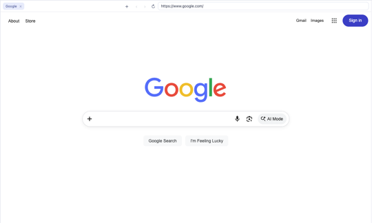
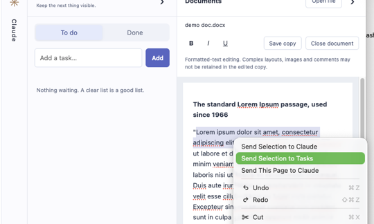
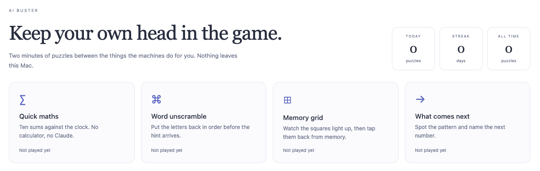

Everything it does, in one place.
The short version is on the front page. This is the long one: every layout, every shortcut, every promise about your data.
One window, and the juggling stops.
Just Zen puts the things you actually use next to each other, so a message, the file it's about, the note you're writing and the assistant helping you are all on screen at once.
All your apps in one place
Pick from a library of a hundred web apps or add any website. There is no dock to hunt through: every pane has a search button, and a couple of letters snaps any app into it, with unread counts and notifications along for the ride.
- Search, don’t switch: a ⌕ in the corner of every pane, type-ahead that completes the name, Enter to snap the app in
- Drag text onto an app to paste it into its message box
- Ask Claude to reply or post and a Paste into Slack or Gmail button lands the draft in the message box; you send it
- Saved layouts: Inbox zero, Standup, Client A, switched from ⌘K
- ⌘K jumps to any note or task, or starts a Claude prompt; ⌘1–9 switch apps by slot, ⌘[ and ⌘] flip between neighbours
- Links from an email or Slack open in a Quick Look drawer beside what you were reading; Esc dismisses it, or promote it to a tab. Shift+Space peeks at any link under the pointer
- Nothing but the app on screen: no dock, no sidebar, no tab bar
- Calls in Slack, Google Chat and Meet work, with your camera and microphone asked for once
- Tabs inside any app
- Several Slack workspaces as tabs in one Slack pane
- Separate browsers per client or project, each isolated, with an icon you choose
- Each app keeps its own login and cookies unless you choose to share them
- Personal and Work profiles for the accounts you keep apart
- Remembers website passwords, encrypted with your Mac's Keychain
- Links that try to launch a desktop app stay inside instead
Claude as your copilot
Claude Code runs in a pane beside your apps with access to the folder you give it. Select text anywhere, in an email, a note, a PDF, press ⌘⇧A, and it's in front of Claude: summarise it, draft a reply, turn it into tasks.
- Chat for everyday work, Terminal when you want the real thing
- Starts in Notes-only; Read-only or Full access when you choose
- Every command it wants to run is shown to you first
- Ask about a tab: pick an open tab, the open document, the note you're writing or your task list, and its text lands in front of Claude with Summarise, Draft a reply, Turn into tasks and Ask, no selecting needed
- Runs inside an operating-system sandbox and talks only to Anthropic
Notes, documents and tasks, same window
An infinite whiteboard for thinking out loud, a Files pane that previews Markdown with wiki links, a Documents pane for PDFs and Word files, and a task list that stays visible.
- Select text anywhere and press ⌘⇧T to make it a task
- Annotate a PDF and save a copy without touching the original
- Edit DOCX, RTF and text files in place
- Everything is stored locally and encrypted with your Mac's Keychain
One bell. Every chat. The message itself, not just a count.
Slack, Google Chat, Teams, WhatsApp, Telegram and Discord keep running in the background, every workspace of them. When something arrives in a pane you are not looking at, the bell in the header shows who said what. Click it and that app opens in the pane you are in, on that conversation. Nothing to go and check.
Each entry carries the sender and the first line of the message, for every workspace and every chat tool, in one list.
Clicking a message swaps its app into the pane you are looking at and lands on that conversation, instead of dragging you somewhere else.
Mute any app for an hour, a day, or until you say otherwise. A soft chime, or none. Unread counts stay honest either way.
Select it. Right-click. Summarise, reply, or turn it into tasks.
An email in Gmail, a thread in Slack, a paragraph in a PDF, a note you're writing, output in the terminal: select any of it, right-click or press ⌘⇧A, and it lands in front of Claude with one-click actions. Summarise it, draft a reply, turn it into tasks, or ask your own question. Nothing selected? The About dropdown under the message box lists every open pane, the open document, the note you're writing and your task list; pick one and Claude reads it before answering. Or skip Claude altogether: ⌘⇧T turns the selection straight into a task. No copying and pasting between tools, and nothing is sent until you choose.
You stay in control. Claude only sees the folder you connect, runs inside an operating-system sandbox, and asks before it runs a command or touches anything outside your notes.
One app. Two side by side. Two thin and one wide. Four. Tabs in all of them.
The centre of the window is yours to arrange. Put the brief next to the design, the inbox next to the calendar, two chats down the side of a document, or four dashboards in a grid, and switch layouts from the header whenever the work changes. Documents open in a pane like anything else: PDFs, Word files, PowerPoint decks (edit the text, present full-pane), text, annotated and saved beside your apps.
Every app has its own tabs: two inboxes, several Slack workspaces, a few Notion pages. ⌘T opens one, ⌘W closes it, and they come back where you left them.

Browsers, as many as you likeAdd a browser for each client or project. Each has its own logins, cookies, tabs and icon, kept apart from every other browser and app, and links from notes and chat open in the first one.
There is no dock. A ⌕ sits in the corner of every pane: type a couple of letters, the name completes, Enter snaps the app in. Whatever you want, wherever you want.
Switch Just Zen to dark and pages that stay stubbornly light are inverted for you, images and video kept the right way round. In light mode nothing is touched.
Choose how long a hidden app stays awake, overall or per app. After that it is closed to free memory, and it reloads the moment you open it again.

Straight to tasksSelect text in any app, note, PDF or terminal and press ⌘⇧T, or right-click. It becomes a task in the list on the right, no Claude involved.
Sign in once and Just Zen offers to save it, like Safari does. Next time the fields fill themselves. Stored per site, encrypted with your Keychain, never listed in the clear.
Slack huddles, Google Meet, Teams: your camera and microphone are asked for once per app, remembered, and changeable under Privacy & data.

Brain breakAI Buster is a small set of puzzles, maths, words, memory and patterns, for keeping your own head in the game between the things the machines do for you.
Everything reachable without the mouse.
Local first. Sandboxed by default. Updated on its own.
There is no Just Zen cloud. Your notes, tasks, whiteboard and settings live on your Mac, encrypted with the Keychain.
Every website runs in Chromium's sandbox in its own profile, with no route to your files or to Claude.
Chat runs inside Anthropic Sandbox Runtime and macOS Seatbelt. It reads the folder you chose and talks only to Anthropic.
Releases are signed with a Developer ID and notarized by Apple. Security patches are tested, built and installed without you doing anything.
Just Zen is open source. Every line, the security review and the automated checks are public at github.com/kierankeene122/just-zen, so you can inspect exactly what runs on your Mac. The full picture, including what still depends on you, is on the Security page.
Just Zen is free software provided as is, without warranty of any kind, under the ISC licence. You are responsible for how you use it and for the accounts and data you connect to it. Inspect the code, decide for yourself, and keep backups.